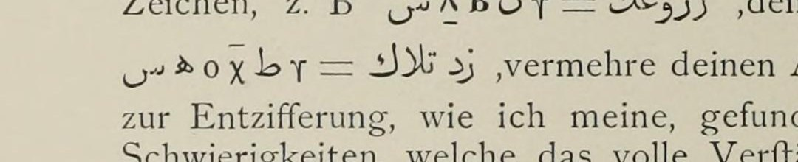

At a glance
- Manuscript
- Austrian National Library, Vienna, A.P. 11016 (PERF 844). Catalogue entry 2832
- Proposed key
- Reversing the numerical order within each of three groups explains four sign values published by Josef Karabacek.
Attempted, open · 22 November 2026. Eleven right-to-left lines on the recto of this ninth-century papyrus from Ihnas remain unread. Their signs mix Greek-looking letters and Arabic forms. An ordinary Arabic letter follows. The verso contains a declaration and witnesses. Neither passage provides a parallel text for the eleven lines. ÖNB manuscript record
What Karabacek read
Read from right to left. The six signs after the divider end in a sweeping bowl. Austrian National Library, A.P. 11016, recto, line 1

In 1894 Josef Karabacek printed three short examples while discussing several specimens. His six-sign example corresponds closely to the second group of line 1. He proposed زد تلاك, which he interpreted as an instruction to increase one's share. His لكل (“for each”) may occur at the end of line 4 if the small upper circle belongs to the writing. His زروعك (“your crops”) has no secure location on this sheet. Crediting all three to this papyrus would give a misleading picture of how much has been read. Karabacek, Führer durch die Ausstellung, no. 844, pp. 226–27
Four of his printed correspondences fit the same numerical operation. Greek gamma (3) gives Arabic zāy (7), lambda (30) gives ʿayn (70), omicron (70) gives lām (30), and chi (600) gives tāʾ (400). This reverses the order of the nine units, the nine tens and the nine hundreds separately, then reads the result in Arabic abjad order. The candidate key explains those historical assignments. Extending it to the rest of the sheet has yielded no continuous reading.
What the manuscript tests show
A reader received nine reference shapes and recorded 90 signs without assigning plaintext. Comparing this transcription with the print located the six-sign example only on line 1. For “your crops,” all 86 five-sign runs in the same transcription disagreed with the printed sequence at three or more identifiable positions, even allowing a word to cross a line break. Sign-by-sign transcription
The raised ring at the far left could supply the last letter of لكل (“for each”). If it belongs to the bowl, the ring opening line 5 offers a second possible ending. Austrian National Library, A.P. 11016, recto, line 4
In a documentary letter, لكل فدان means “for each feddan,” a unit of land area. Under the proposed key, the signs at the start of line 5 do not fit فدان at either starting position in any of the four transcriptions. The wider documentary corpus supplied seven other legible words following لكل. None fits either position. Research record and corpus tests
A reader compared the signs with the Vienna numeral table A.P. 1255 before applying a key. That pass records 91 sign positions, including damage, across eleven lines. A slash marks alternative identities, a star an unreadable position, and a vertical bar a proposed division. Four versions preserve different interpretations of the ambiguous signs. Transcription and sign descriptions · Variant used for Karabacek's proposed values
The numerical reversal scored better than direct abjad substitution on documentary Arabic. With alternatives allowed, groups covering 26 of 82 eligible sign positions could be made into individual dictionary words. That measures fit to a vocabulary. It does not establish that those positions have been read. Common signs can receive common letters even if a proposed key gets the order wrong.
On 22 November we tested word order against a corpus of 55,278 words from documentary letters in the Arabic Papyrology Database. For each of the four transcriptions, we enumerated the sign alternatives within each line. No two consecutive groups matched consecutive corpus words. The result held after merging Arabic letter families that share the same undotted shape. Exact phrase matching has low sensitivity on such a short, uncertain text. Arabic Papyrology Database · Pair test
Removing word divisions allowed one seven-letter exact match on line 9 of variant C, طلكوالس. In the comparison letter it begins inside a word and ends inside the following greeting. In 164 of 999 trials, shuffling the signs within each manuscript line while keeping damage fixed produced a match at least as long somewhere on the sheet. Variant B produced another seven-letter overlap only after removing dot distinctions (144 of 999 controls). Neither supplies a new word or sentence. Span test
Limits of the available material
Arabic, Coptic and Greek language models, free substitution, alternative numeral orders, mirror readings, letter formulas and names from the adjacent Arabic passages have all been tried. The published comparison with A.P. 5584 distinguishes that document's dinar numerals from the signs on PERF 844. Grohmann's other references include magical signs. No second specimen in the same system was verified. Bogensperger and Reinfandt, Tyche 34, p. 12 · Grohmann, From the World of Arabic Papyri, p. 93
The library's alternate image service also reports a 636 × 2464 pixel master. Several loops and final bowls remain ambiguous at that scale. A new photograph, an independently identified specimen carrying a longer parallel passage, or Karabacek's working key could change the result. ÖNB image metadata